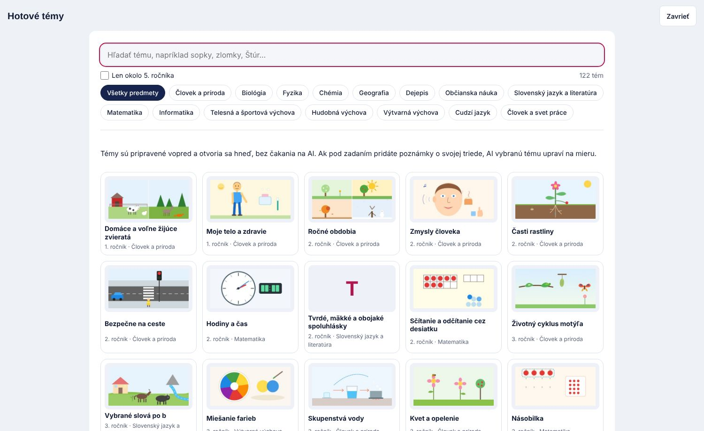
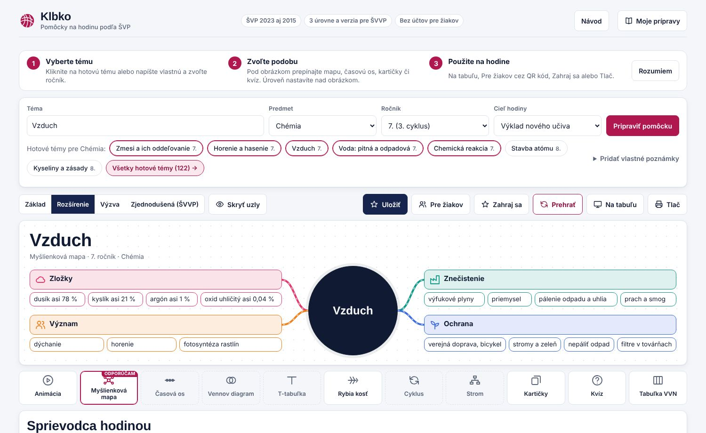
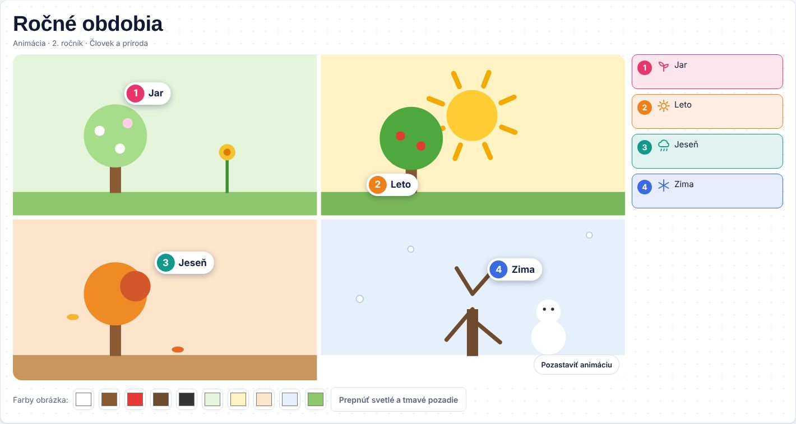
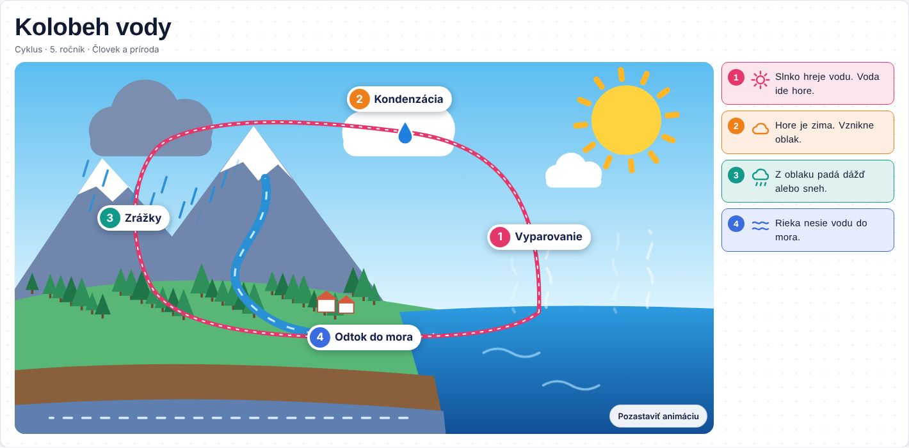
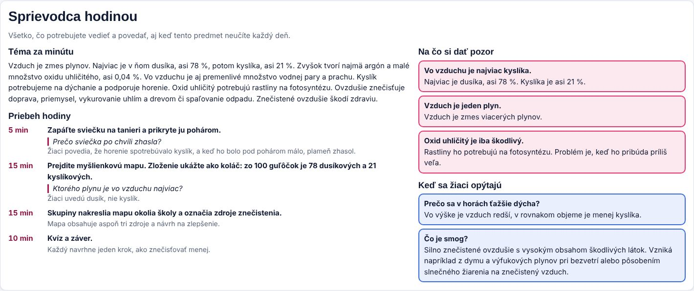
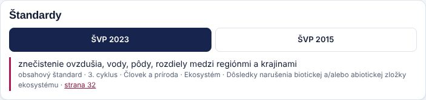
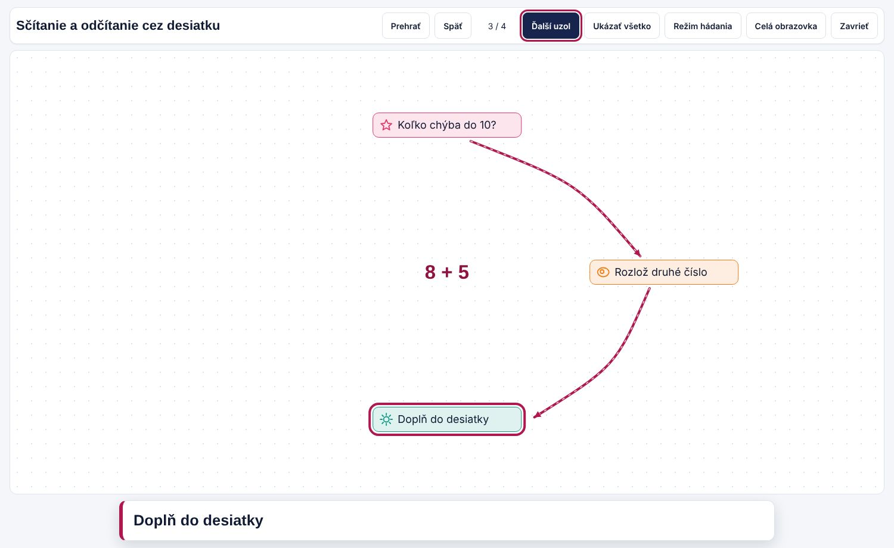
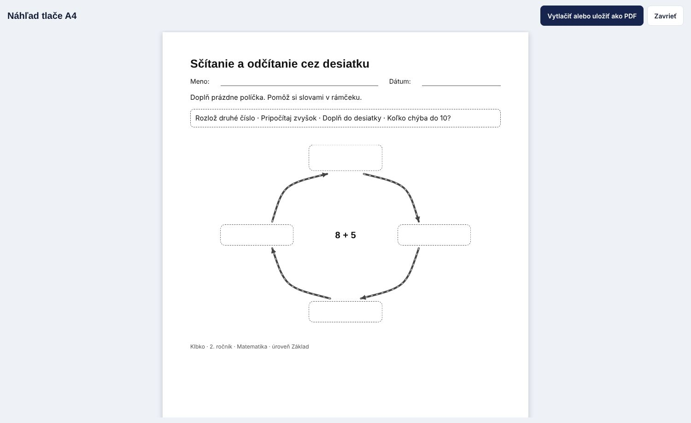
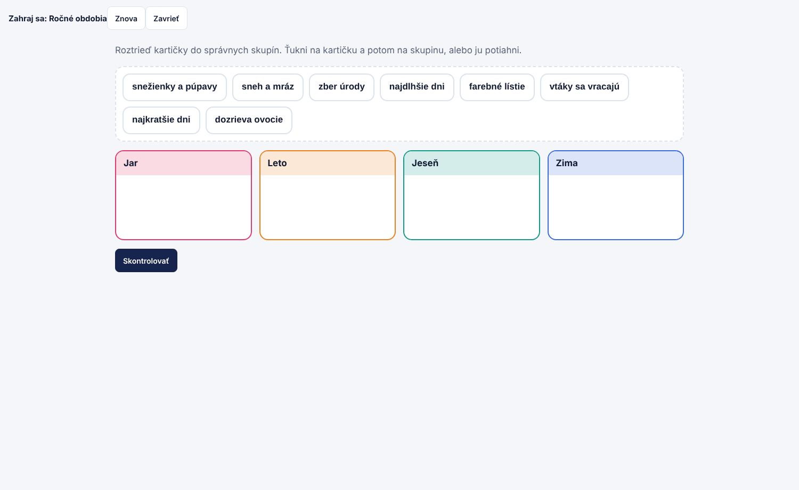

Napíšte vlastnú tému alebo otvorte jednu zo 122 hotových tém zo 16 predmetov.
Hľadať sa dá aj inými slovami, filtrovať podľa predmetu a ročníka.
Hotová téma sa otvorí hneď, bez čakania na AI

Učivo o vzťahoch dostane myšlienkovú mapu, dej v čase časovú os, porovnanie Vennov diagram.
Inú podobu prepnete jedným klikom.



Pri každej téme vidíte, ktorý obsahový a výkonový štandard pokrýva, s odkazom na stranu v dokumente.
Štandardy sa vyberajú z databázy skutočných textov. Umelá inteligencia si ich nevymýšľa.
ŠVP 2023 je povinný od 1. ročníka od školského roka 2026/2027

Ďalší uzol ukážete šípkou alebo medzerníkom.
Režim hádania skryje popisy a žiaci tipujú.


Tlač na A4 s prázdnymi políčkami a kľúčom. Žiaci na tabletoch otvoria odkaz alebo QR kód, bez účtu.
„Učiteľ zadá tému a ročník a do piatich minút má hotovú vizuálnu pomôcku na hodinu… Z jednej témy pripraví desať podôb spracovania a sama odporučí tú, ktorá sa k učivu najlepšie hodí.“
Text anotácie sme nemenili. Aplikácia ho musí splniť bod po bode.